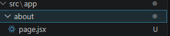
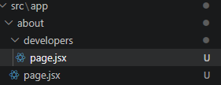
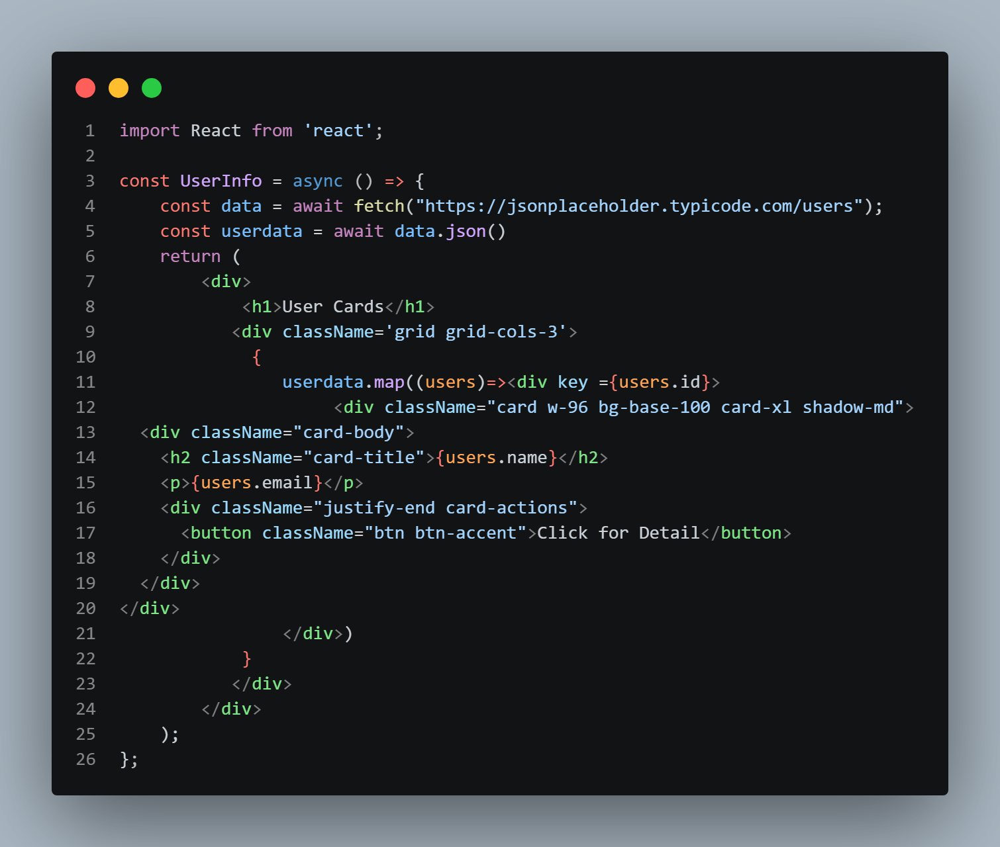
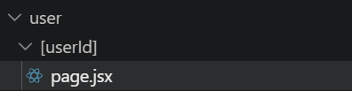
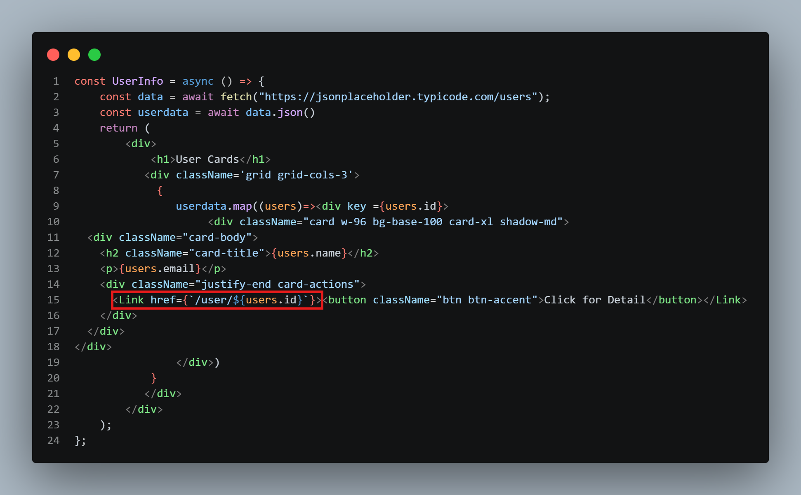
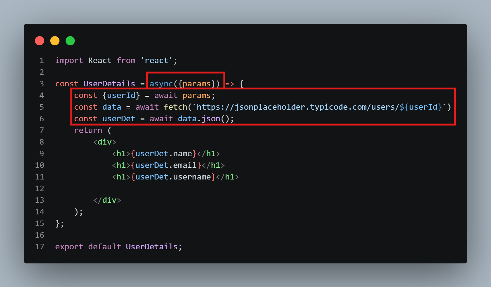
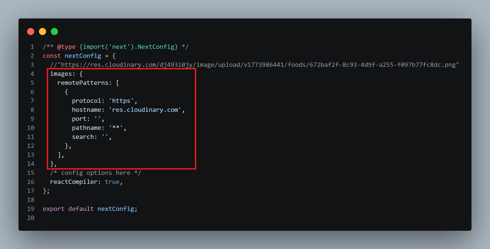
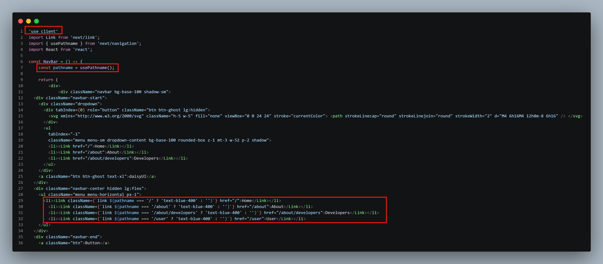

Nested Routing is also possible in Next.js. For that, you can create a folder inside the about folder and name it something like developers and inside it create a page.jsx file.
 For making components, make the coponent folder inside scr NOT app and just like react we can make files like NavBar.jsx and Footer.jsx. And place this component in layout.js file and place it just above or below {children}
For DaisyUI we need to intall it and place the plugin in global.css file under the tailwind import.
Link href
For fetching---
For making components, make the coponent folder inside scr NOT app and just like react we can make files like NavBar.jsx and Footer.jsx. And place this component in layout.js file and place it just above or below {children}
For DaisyUI we need to intall it and place the plugin in global.css file under the tailwind import.
Link href
For fetching---

to make dynamic routes, we can make a folder named [blogid] inside blog folder and inside it make a page.jsx file. in that page we need params async await just like in documentaion
In user folder---
In [userId] folder---
we can create our custome nested layout for dashboard or something. make sure the childrean is at the right place of layout Image tag in next.js cannot be used with referencing it in next.config.mjs. make sure to add alt, width and height in the Image tag----
Metadata not-found.jsx file can be created for custom 404 page for active navlinks use const pathname = usePathname(). plus remeber to use 'use client' at the top of the file for using usePathname hook. need to use className={pathname === '/' ? 'text-blue-400' : ''} for active links
google font can be used by importing it and then use className={font.className} in the element. for example, if we import inter font then we can use className={inter.className} in the element to apply the font. check documentation for more details. useStare, useEffect, onClick etc this need use client any api data needs localhost link. we can install json server. according to doc make a file in root folder. then add the json data. can add multiple json data. don't forget to make a server property in config ISR Vs SSG Vs Dynamic cache --> no-store (don't store cache is dynamically rendered) ---> force-cache (stores cache) next: revalidate (ISR) (can tell after how many secords u wanna render)